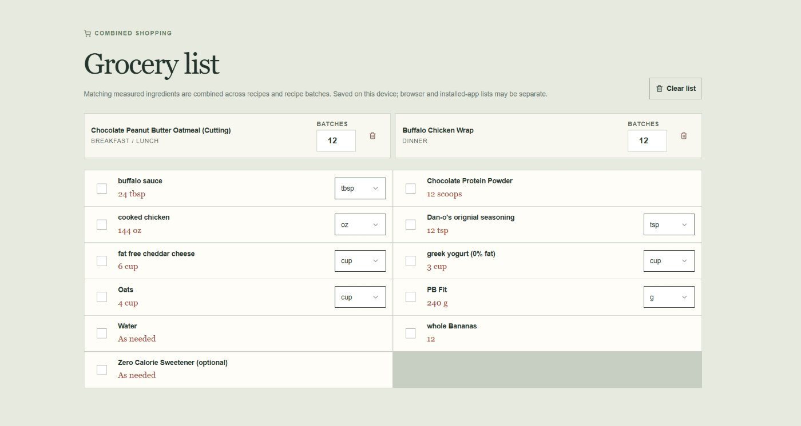
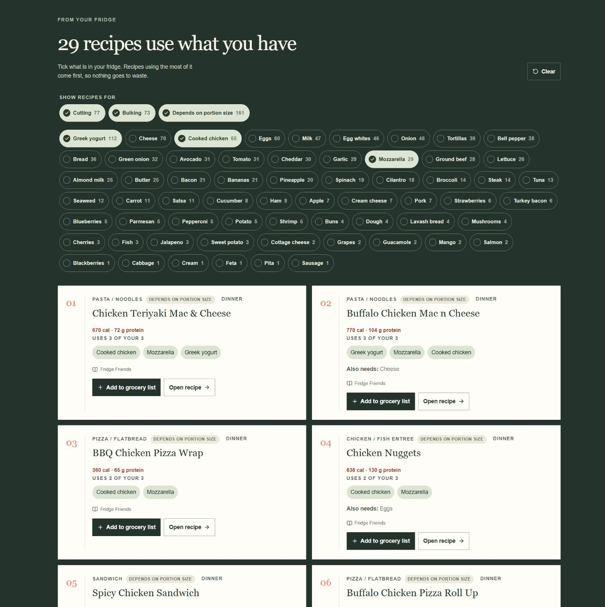
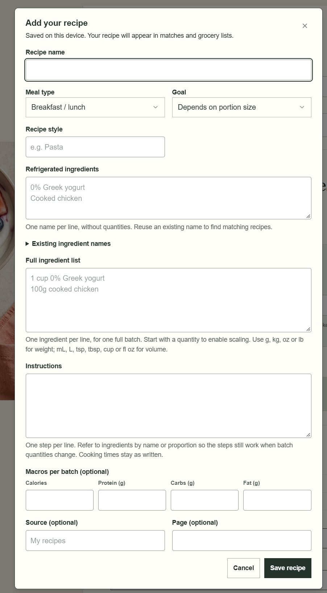
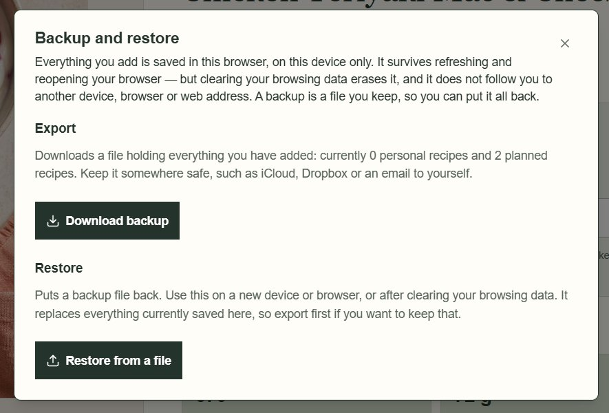

Fridge Friends
TypeScript · React · Vite · Tailwind CSS · Zod · Service Workers
Status: [ ACTIVE ]
Fridge Friends is a static React and TypeScript app for planning meals around what is already in the fridge. Pick your ingredients and it ranks recipes by shared ingredients, then scales batches, converts units and combines everything into a single grocery list.
It is built to need nothing but the browser: no server, database, hosting credentials or API keys. Personal recipes and the grocery list are saved in browser storage, validated on the way in and on the way out, and can be exported to a JSON backup and restored on another device or address.
After its first successful load the app works offline through a service worker that is generated with each production build and caches only the site's own files.
Key Features
- Fridge finder: pick ingredients and get recipes ranked by shared ingredients
- Batch and unit calculator with nutrition figures scaled by batch
- Grocery list that combines quantities and tracks purchased items
- Cutting and bulking labels with a goal filter for the recipe picker
- Add, edit and delete personal recipes, saved on the current device
- JSON backup and restore, with a confirmation before anything is replaced
- Offline support through a service worker generated at build time
What This Project Demonstrates
- Building a typed React front end with TypeScript and Vite
- Schema validation with Zod for forms, files and stored data
- Recoverable errors and validated browser storage
- Offline-first delivery with a generated service worker
- Release checks: lint, type checking, regression tests and dependency audit
Notes
Recipes added in the app are saved on the current browser only; they are not shared with other visitors. Saved data belongs to one web address, so the backup feature is how data moves between devices or addresses. Quantities represent recipe batches, not verified serving yields.
Screenshots




